Tutorial IC Design Basic Flow
Table of Contents
1. Tutorial: simple design flow
1.1. Goals
This tutorial aims to describe the design flow for
creating an IC. The module that you are going to develop as an example is
an 8-bit adder with registered inputs and outputs; it is called
my_adder
In this tutorial, the design flow that you are going to exercise includes the following steps:
- RTL design and simulation
- Synthesis of the RTL code to produce a netlist
- Simulation of the gate-level netlist with back-annotated delays
- Place and Route of the design to produce a layout
The general view of the flow is shown in the following picture:
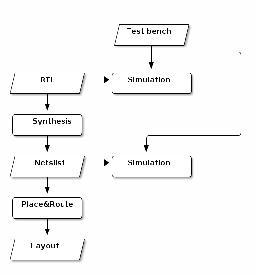
1.2. Organise your data
Before you start with the design flow, it is a good idea to create a
set of directories where you will put the data generated
during the design flow. All the files in the design are located in the
directory my_adder. Inside this directory, you need the following
subdirectories:
- rtl: This sub-directory will contain the VHDL files that model our design. The files are at the Register-Transfer-Level (RTL).
- tb: This sub-directory will contain the VHDL files that you need for the simulation of the design. They define the test-bench. Note that they are not going to be synthesised.
- gate: This sub-directory will contain the gate-level netlist that results out of the synthesis.
- layout: This sub-directory will contain the layout of the design after the place and route process.
Open a new terminal and go to the directory where you want to work. In that terminal, you can create the required directories executing with the following shell commands:
mkdir my_adder mkdir my_adder/rtl mkdir my_adder/tb mkdir my_adder/gate mkdir my_adder/layout
It is also a good idea to create a new sub-directory for each tool that you want to use. They are:
- do_sim: A sub-directory for running the simulation (at the RTL and at the gate level).
- do_synth: A sub-directory for running the synthesis.
- do_pr: A sub-directory for running the place and route.
mkdir my_adder/do_sim mkdir my_adder/do_synth mkdir my_adder/do_pr
Now that you have a clear structure for your data, you can start with the implementation.
2. Design the unit (RTL)
The first step in the design flow is to create the RTL code of the adder using VHDL. When you write your VHDL code, it is a good idea to check that there are no syntactic errors. For that you have to compile your code using a VHDL simulation tool. Let us proceed.
2.1. Write the VHDL code
You just need a text editor to write VHDL. In the terminal, go to the
directory my_adder/rtl and open a text editor to create the file
my_adder.vhd. There are a lot of possibilities, as
vim, nano, gedit, etc. I would recomend you emacs.
In the terminal execute:
cd my_adder/rtl
and then,
emacs my_adder.vhd &
The code can be as follows. Copy the code in the emacs buffer and save and then close it.
library ieee;
use ieee.std_logic_1164.all;
use ieee.numeric_std.all;
entity my_adder is
port (
clk,rstn: in std_logic;
dta,dtb : in std_logic_vector(7 downto 0);
dto : out std_logic_vector(7 downto 0));
end my_adder;
architecture rtl of my_adder is
signal dta_int,dtb_int,dto_int : std_logic_vector(7 downto 0);
begin -- architecture rtl
-- Define the memory elements
process (clk, rstn) is
begin -- process
if rstn = '0' then -- asynchronous reset (active low)
dta_int <= (others=>'0');
dtb_int <= (others=>'0');
dto <= (others=>'0');
elsif clk'event and clk = '1' then -- rising clock edge
dta_int <= dta;
dtb_int <= dtb;
dto <= dto_int;
end if;
end process;
-- Define the adder
dto_int <= std_logic_vector( signed(dta_int)+signed(dtb_int) );
end architecture rtl;
2.2. Compile the code
To ensure that your code does not have any error, you can compile it with a VHDL simulation tool.
You are going to use the tool irun from
Cadence.
Before you can actually use it, you have to load the tool and to do
the setup. You should go to the directory my_adder/do_sim where you
are going to run the simulation tool. In a new terminal execute:
cd ../do_sim
setenv LM_LICENSE_FILE "28211@item0096" source /eda/cadence/2017-18/scripts/INCISIVE_15.20.038_RHELx86.csh
Actually, it is a good idea to create a file called source.csh in the
my_adder/do_sim/ directory so that you do not have to remember the location of
the initialisation script.
Once the set-up is done, you can use the irun tool. To
compile the VHDL code that you wrote, execute in the terminal the following command:
irun -compile -v93 -access +rw ../rtl/my_adder.vhd
The compilation process starts, and the tool reports if there have been any error. If you have them, you need to correct the VHDL code with the text editor.
The options that you have used are the following:
- -compile: Indicates that you want to compile the code; still you do not elaborate or simulate.
- -v93: Indicates that you want to use the revision 1993 of VHDL. You can also use
-v200xfor that latest VHDL features. - -access +rw: Indicates that you want to access all the signals in your design.
It is a bit inconvenient to remember the options of the irun
command. A better alternative is to create a file called hdl.var in the
do_sim directory with the options that you use by default. The contents of the
hdl.var can be as follows:
DEFINE IRUNOPTS -access +rw -v93
Observe it does not include the -compile because sometimes you want to use this options and sometimes not.
Now the compilation can be executed by running the simpler command:
irun -compile ../rtl/my_adder.vhd
3. Create test-bench and simulate
Now you can create a test-bench that exercise the unit. Go the the
directory ../tb and then open a new file named
my_adder_tb.vhd to define the test bench. In the terminal type:
cd ../tb pwd
And open your file using for example the emacs editor:
emacs my_adder_tb.vhd
The code can be as follows:
library ieee;
use ieee.std_logic_1164.all;
use ieee.numeric_std.all;
entity my_adder_tb is
end entity my_adder_tb;
architecture tst of my_adder_tb is
-- component ports
signal dta, dtb : std_logic_vector(7 downto 0);
signal dto : std_logic_vector(7 downto 0);
-- clock
signal clk : std_logic := '1';
signal rstn : std_logic;
begin -- architecture tst
-- component instantiation
DUT: entity work.my_adder
port map (
clk => clk,
rstn => rstn,
dta => dta,
dtb => dtb,
dto => dto);
-- clock generation
clk <= not clk after 1 ns;
rstn <= '0', '1' after 500 ps;
-- waveform generation
WaveGen_Proc: process
begin
dta <= std_logic_vector(to_signed(3, dta'length));
dtb <= std_logic_vector(to_signed(-1, dtb'length));
wait until clk = '0';
wait until clk = '0';
dta <= std_logic_vector(to_signed(6, dta'length));
dtb <= std_logic_vector(to_signed(1, dtb'length));
wait until clk = '0';
dta <= std_logic_vector(to_signed(-4, dta'length));
dtb <= std_logic_vector(to_signed(-3, dtb'length));
wait until clk = '0';
dta <= std_logic_vector(to_signed(2**7-1, dta'length));
dtb <= std_logic_vector(to_signed(1, dtb'length));
wait until clk = '0';
wait until clk = '0';
report "End simulation" severity failure; -- Finish
end process WaveGen_Proc;
end architecture tst;
Save and close the emacs. Now you can compile it to ensure that there are no errors. To do that,
you have to go to the directory do_sim where the simulation
tools works; there you can launch irun again.
cd ../do_sim irun -compile ../tb/my_adder_tb.vhd
Afterwards, you can launch irun in graphical mode to simulate the testbench:
irun -gui ../tb/my_adder_tb.vhd ../rtl/my_adder.vhd -top my_adder_tb
The options that you have used are the following:
- -gui: Indicates that you want to use the graphical user interface to see the signals in a window.
- -top my_adder_tb: Indicates the (top) design that you want to simulate; in your case, it is the entity name of the test-bench.
Once you start the tool, you can use the Design Browser to select
the signals that you want to plot during simulation. For example, you
can select all the signals of the DUT. Click in the waveform symbol or in
the menu Windows → Send To → Waveform.
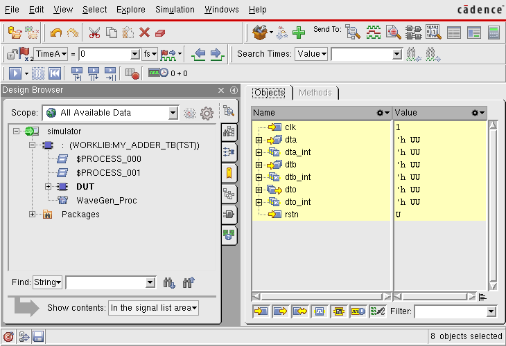
Then you can simulate using Simulation → Run
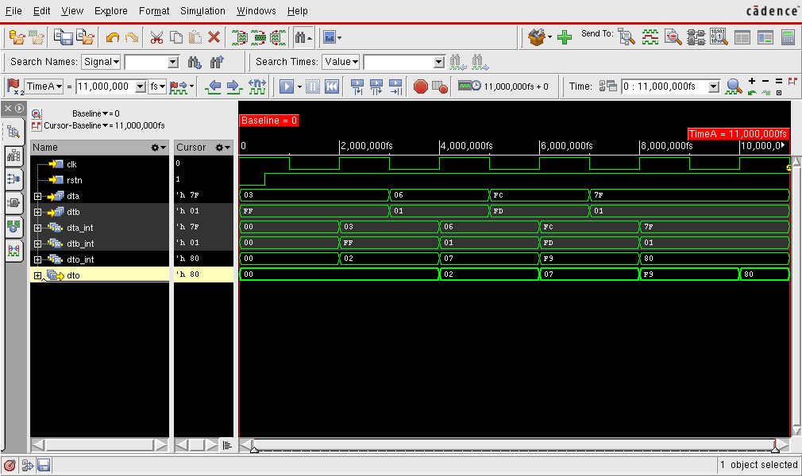
It is convenient to have a script to re-run the simulation without using the GUI. You can create a
file called do_sim.tcl with the following content:
database my_adder_tb.vcd -vcd -default probe -create -all -depth all run
It will create a database in vcd format, add as probes all the
signals in the hierarchy and then run the test-bench.
Now you can run an automatic simulation:
irun ../tb/my_adder_tb.vhd ../rtl/my_adder.vhd -top my_adder_tb -input do_sim.tcl
4. Synthesize the unit
In this part of the tutorial you are going to synthesise your
my_adder unit using the design_vision tool from Synopys,
one of the tools most commonly used in industry today for IC design.
The flow of information during synthesis can be summarised in the following figure:
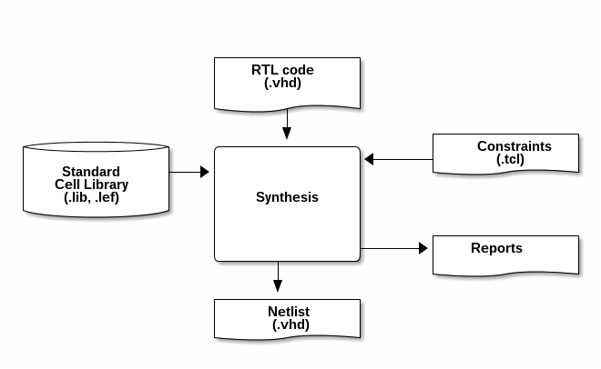
The synthesis tool transforms a description of the circuit at the RTL level (Register Transfer Level) into a netlist. Basically, the RTL code, which is written in a hardware description language as VHDL and defines the functionality of the unit. The netlist describes the implementation of the unit using digital gates from a existing library of standard cells.
In order to perform a Synthesis the tool needs not only the
information about the timing and size of the standard cells, but also
which are the requirements for the circuit. For example, you can
specify the maximum area that you expect your implementation to use or
the speed that you target. This information, referred as constraints,
is typically given with a script written a language called tcl.
The main result of the synthesis process is the netlist. Furthermore, it generate as well some reports that describe the important characteristics of your design: area, performance, power consumption etc.
4.1. Setup for the synthesis
To start the synthesis, open a new terminal and go to the do_synth directory.
cd my_adder/do_synth pwd
During the synthesis process, you are going to generate a lot of data. Therefore, it is a good idea to organise the information in sub-directories. You can use:
- results: This sub-directory contains the results of the synthesis
- reports: This sub-directory contains the reports generated during synthesis
- cmd: It contains the scipts that you can use to automatise the synthesis process
- log: In this sub-directory you can save of the log files generated during the synthesis process
- tool: In this sub-directory you can put all the intermediate files required by the tool. Note that Once you are done with the synthesis, you can delete this directory but not the previous ones.
mkdir results mkdir reports mkdir cmd mkdir log mkdir tool
To do the set-up, we have to define the paths to the tool. Create a
file called sourceme.csh with the following content:
setenv SNPSLMD_LICENSE_FILE "28231@item0096"
setenv PATH /usrf01/prog/synopsys/syn/R-2020.09-SP4/bin:${PATH}
Now you can source it:
source sourceme.csh
Before you open the synthesis tool, it is practical to select the library of
standard cells that you use and to instruct the tool to save the log
files into the directories that you have previously defined. You can
do that creating a .synopsys_dc.setup file. Run emacs .synopsys_dc.setup.
First, you can add the following commands to your .synopsys_dc.setup
file; they instruct the tool to use your directories.
define_design_lib work -path ./tool/work set_app_var view_log_file ./log/synth_view.log set_app_var sh_command_log_file ./log/synth_sh.log set_app_var filename_log_file ./log/synth_file.log set_app_var search_path [concat ./cmd/ [get_app_var search_path] ]
And afterwards you can write the command to define the library to use.
set library_path "../../../0_FreePDK45/LIB"
set library_name "NangateOpenCellLibrary_typical_ccs.db"
set_app_var target_library $library_name
set_app_var link_library [concat $library_name dw_foundation.sldb "*"]
set_app_var search_path [concat $library_path [get_app_var search_path] ]
set_app_var synthetic_library [list dw_foundation.sldb]
set_app_var symbol_library [list class.sdb]
set_app_var vhdlout_use_packages { ieee.std_logic_1164.all NangateOpenCellLibrary.Components.all }
set_app_var vhdlout_write_components FALSE
Observe that you are using the library
NangateOpenCellLibrary_typical_ccs.db that contains typical delay
values. A more conservative alternative would have been to use
NangateOpenCellLibrary_slow_ccs.db with the worst delays.
Save your file. Now, when the synthesis tool starts, it will use the right technology.
.db extention is the synopsys library database format which is the compiled version of .lib file.
4.2. First synthesis
Now you can start the tool. Launch design_vision in the terminal. To
save the log in a directory, you can add a linux pipe
tee log/synthesis.log that redirects the log output to a file called log/synthesis.log.
design_vision | tee log/synthesis.log &
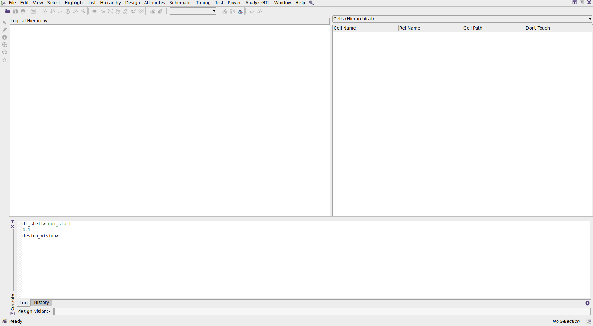
Now we can start the synthesis. The first step is to read the RTL code. In the menu select File →
Read . In the new window select the VHDL code to read, i.e., ../rtl/my_adder.vhd and click Open.
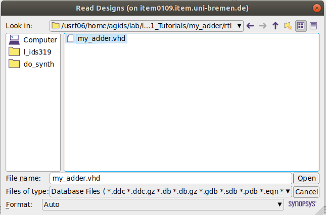
Alternatively, you can type the following command line in the design_vision prompt.
read_file -format vhdl {../rtl/my_adder.vhd}
The tool reads and "understands" the code. In the log file you can see the elements that it has inferred. For example, it found the following registers:
Inferred memory devices in process in routine my_adder line 22 in file '/usrf06/home/agids/usr/agarcia/GIT/tutorial_ic_design/my_adder/rtl/my_adder.vhd'. =============================================================================== | Register Name | Type | Width | Bus | MB | AR | AS | SR | SS | ST | =============================================================================== | dto_reg | Flip-flop | 8 | Y | N | Y | N | N | N | N | | dta_int_reg | Flip-flop | 8 | Y | N | Y | N | N | N | N | | dtb_int_reg | Flip-flop | 8 | Y | N | Y | N | N | N | N | =============================================================================== Presto compilation completed successfully.
Before we compile the design, we define a set of design constraints in tool command language (Tcl).
The synthesis tool will generate a .sdc file (Synopsys Design Constraints) that can be given as an input to the place and route tool later on.
Copy and paste the following you can commands in the design_vision prompt.
create_clock [get_ports clk] -period 8.0 -waveform {0 4} -name clk
set_clock_uncertainty 0.025 -setup [get_clocks clk]
set_clock_uncertainty 0.025 -hold [get_clocks clk]
set_clock_transition -fall 0.04 [get_clocks clk]
set_clock_transition -rise 0.04 [get_clocks clk]
set_dont_touch clk
set_dont_touch rstn
set_clock_latency -max -source 0.1 [get_clocks clk]
set_input_delay -max -clock clk 0.05 [get_ports {dta dtb}]
set_output_delay -max -clock clk 0.05 [all_outputs]
set_false_path -from [get_ports rstn]
check_timing
Now we can map the design into gates. In the menu select Design → Compile design.... You can
start a default synthesis by clicking Apply without any modification.
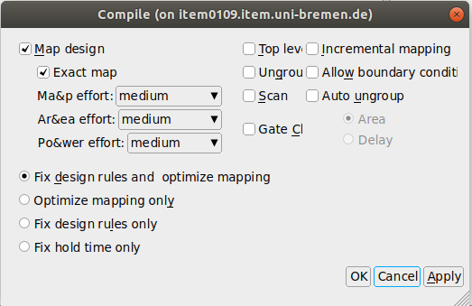
Alternatively, you can type the following command line in the design_vision prompt.
compile
If you want to see the schematic of the result, select in the menu Schematic → New schematic view.
The result is:
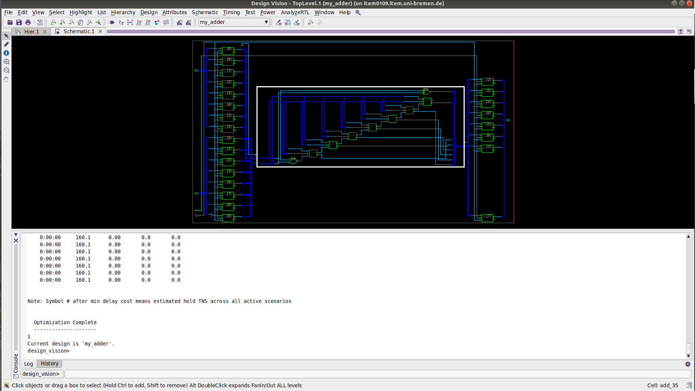
Since you have not define any constraints, the tool chooses an architecture for the adder which is small in area.
Now you can check the characteristics of your design. Let us analyse
first the area requirements. In the menu select Design → Report
Area. It is a good idea to save the reports. In the design_vision prompt type:
report_area > reports/my_adder-spl_synth.area
As you can see in the report, most of the area is required for the noncombinational elements.
****************************************
Report : area
Design : my_adder
Version: K-2015.06-SP4
Date : Fri May 25 18:49:21 2018
****************************************
Information: Updating design information... (UID-85)
Library(s) Used:
NangateOpenCellLibrary (File: /usrf06/home/agids/usr/agarcia/GIT/tutorial_ic_design/FreePDK45/NangateOpenCellLibrary_typical_ccs.db)
Number of ports: 52
Number of nets: 82
Number of cells: 35
Number of combinational cells: 9
Number of sequential cells: 25
Number of macros/black boxes: 0
Number of buf/inv: 0
Number of references: 2
Combinational area: 32.452000
Buf/Inv area: 0.000000
Noncombinational area: 127.680004
Macro/Black Box area: 0.000000
Net Interconnect area: undefined (Wire load has zero net area)
Total cell area: 160.132004
Total area: undefined
1
As you can see in the report, most of the area is required for the noncombinational elements.
In the same way, you can check power as follows:
report_power > reports/my_adder-spl_synth.power
According to the report, the total power is 21.7887 uW.
The final step, is to save the netlist of the design with the command
write_file -f vhdl. Since each language (e.g. vhdl or verilog)
have some restrictions in the names of the components, it is safer to
change the names of all the elements with non-compliant names. This
can be done with the command change_names. You can then execute:
change_names -hier -rules vhdl change_names -hier -rules verilog write_file -hierarchy -f vhdl -output "./results/my_adder.vhd" write_file -hierarchy -f verilog -output "./results/my_adder.v"
If you plan to perform later on a simulation with delays, you need to
write a file with those delays. The format is called sdf and can be generated
with the command write_sdf, for example:
write_sdf "./results/my_adder.sdf"
In addition to the VHDL and Verilog gate-level netlists and Standard Delay Format (.sdf) file, Synopsys DC can also generate a .ddc file. This files contains information about the gate-level netlist and timing, and using .ddc file the current state of the synthesis can be reloaded. This file can be generated as follows:
write -hierarchy -f ddc -output "./results/my_adder.ddc"
Your first synthesis is done. If you want to repeat the steps, it is a
good idea to create with script with all the commands. You can create a file called
cmd/do_synth_spl.tcl with the following content:
read_file -format vhdl {../rtl/my_adder.vhd}
create_clock [get_ports clk] -period 8.0 -waveform {0 4} -name clk
set_clock_uncertainty 0.025 -setup [get_clocks clk]
set_clock_uncertainty 0.025 -hold [get_clocks clk]
set_clock_transition -fall 0.04 [get_clocks clk]
set_clock_transition -rise 0.04 [get_clocks clk]
set_dont_touch clk
set_dont_touch rstn
set_clock_latency -max -source 0.1 [get_clocks clk]
set_input_delay -max -clock clk 0.05 [get_ports {dta dtb}]
set_output_delay -max -clock clk 0.05 [all_outputs]
set_false_path -from [get_ports rstn]
check_timing
compile
report_area > reports/my_adder-spl_synth.area
report_power > reports/my_adder-spl_synth.power
change_names -hier -rules vhdl
change_names -hier -rules verilog
write_file -hierarchy -f vhdl -output "./results/my_adder.vhd"
write_file -hierarchy -f verilog -output "./results/my_adder.v"
write_sdf "./results/my_adder.sdf"
write -hierarchy -f ddc -output "./results/my_adder.ddc"
and then re-execute the synthesis as follows:
dc_shell -x "source cmd/do_synth_spl.tcl; quit"
Once you are satisfied with the results of your synthesis, you can copy the files to the
directory gate . From this directory you can take later on the final results.
cp results/my_adder.sdf results/my_adder.vhd results/my_adder.v ../gate/
5. Simulate gate-level
5.1. Setup gate-level sim
Open a new terminal, go to the simulation directory and source the set-up file to access the simulation tools.
cd my_adder/do_sim source sourceme.csh
To simulate at the gate-level, you need the library of standard
cells; in this tutorial it is the NangateOpenCellLibrary. You can
create a cds.lib to inform the simulation tool where this library is located.
DEFINE nangateopencelllibrary ../../../0_FreePDK45/VITAL/nangateopencelllibrary
5.2. Simulate with a SDF file
Before you can simulate with delays, you have to compile the sdf file. It can be done as follows:
ncsdfc ../gate/my_adder.sdf -o my_adder.sdf.X
Furthermore, you need to create a file to indicate the simulation tool which kind of delay (maximum, minimum, or typical) you want to use. Let us use
worst case delays. You should also indicate the "path" to the unit that you want to anotate, the so called scope. In your case, it is simply :DUT, as you
defined it in the my_adder_tb.vhd file. The sdf.cmd is then as follows:
COMPILED_SDF_FILE = "my_adder.sdf.X", SCOPE = :DUT, MTM_CONTROL = "MAXIMUM", SCALE_FACTORS = "1.0:1.0:1.0";
You can run your test-bench, this time using a netlist with back-annotated delays:
irun -compile ../gate/my_adder.vhd irun -gui ../tb/my_adder_tb.vhd -top my_adder_tb -sdf_cmd_file sdf.cmd
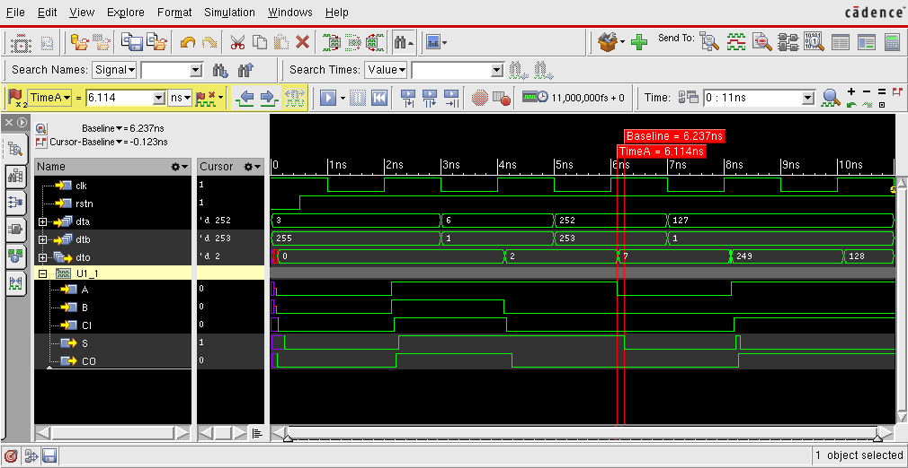
You can observe the delay in the waveforms. For example, the cell U1_1 has a delay between
A and S of \(6.237-6.114=0.123\) ns. You can check in the my_adder.sdf file that the interconnect delay
of the input A of the gate U1_1 for a falling edge is \(0.027\) ns
(INTERCONNECT dta_int_regx1x/Q add_36/U1_1/A (0.026:0.028:0.028) (0.026:0.027:0.027))
while the delay for an A → S falling transition when B=0 and C=0 is \(0.096\) ns.
(INSTANCE add_36/U1_1)
(DELAY
(ABSOLUTE
.....
(COND (B == 1'b0) && (CI == 1'b0) (IOPATH A S (0.041:0.042:0.042) (0.096:0.096:0.096)))
......
)
)
)
5.3. Automatic execution
It is convenient to have a script to re-run the simulation without using the GUI. You can create a
file called do_sim_sdf.tcl with the following content:
database my_adder_tb.vcd -vcd -default probe -create -all -depth all run
Now you can run an automatic simulation as follows:
irun ../gate/my_adder.vhd ../tb/my_adder_tb.vhd -top my_adder_tb -sdf_cmd_file sdf.cmd -input do_sim_sdf.tcl
5.4. Power estimation
Power estimation requires one file with the transition activity of the nets in your design. This file, normally written in a format called
saif can be generated with the dumpsaif command. For example, you can create the file do_sim_saif.tcl:
dumpsaif -depth to_cells -output my_adder.saif -scope :DUT run
and then execute:
irun ../gate/my_adder.vhd ../tb/my_adder_tb.vhd -top my_adder_tb:tst -sdf_cmd_file sdf.cmd -input do_sim_saif.tcl
For example, the information about the clock is:
(SAIFILE
(SAIFVERSION "2.0")
(DIRECTION "backward")
(DESIGN )
(DATE "Jun 06 2018 16:53:40 CEST")
(VENDOR "Cadence Design Systems, Inc")
(PROGRAM_NAME "NC Simulation Engine")
(VERSION "TOOL: ncsim 15.20-s038")
(DIVIDER . )
(TIMESCALE 1 fs )
(DURATION 11000000)
(INSTANCE "my_adder" :DUT
(PORT
(clk
(T0 5000000) (T1 6000000) (TX 0)
(TZ 0) (TB 0) (TC 11)
)
Out of the total simulation time, 11000000 fs, the clock was zero 5000000 fs, one 6000000 fs and there were 11 changes in the signal.
Now that the saif file is created, we can get the back-annotated power report.
To do so, we redirect to the do_synth directory and launch the Design_vision as usuall:
cd ../do_synth design_vision | tee log/synthesis.log &
read_file -format ddc {./results/my_adder.ddc}
read_saif -input ../do_sim/my_adder.saif -instance_name DUT -verbose report_power > reports/my_adder-post_synth.power
The new report looks like this.
****************************************
Report : power
-analysis_effort low
Design : my_adder
Version: K-2015.06-SP4
Date : Fri Apr 12 15:28:49 2019
****************************************
Library(s) Used:
NangateOpenCellLibrary (File: /usrf06/home/agids/lab/l_ids310/FreePDK45/LIB/NangateOpenCellLibrary_typical_ccs.db)
Operating Conditions: typical Library: NangateOpenCellLibrary
Wire Load Model Mode: top
Design Wire Load Model Library
------------------------------------------------
my_adder 5K_hvratio_1_1 NangateOpenCellLibrary
Global Operating Voltage = 1.1
Power-specific unit information :
Voltage Units = 1V
Capacitance Units = 1.000000ff
Time Units = 1ns
Dynamic Power Units = 1uW (derived from V,C,T units)
Leakage Power Units = 1nW
Cell Internal Power = 124.7924 uW (87%)
Net Switching Power = 18.0682 uW (13%)
---------
Total Dynamic Power = 142.8606 uW (100%)
Cell Leakage Power = 2.6824 uW
Information: report_power power group summary does not include estimated clock tree power. (PWR-789)
Internal Switching Leakage Total
Power Group Power Power Power Power ( % ) Attrs
--------------------------------------------------------------------------------------------------
io_pad 0.0000 0.0000 0.0000 0.0000 ( 0.00%)
memory 0.0000 0.0000 0.0000 0.0000 ( 0.00%)
black_box 0.0000 0.0000 0.0000 0.0000 ( 0.00%)
clock_network 0.0000 0.0000 0.0000 0.0000 ( 0.00%)
register 0.0000 0.0000 0.0000 0.0000 ( 0.00%)
sequential 104.6088 9.9684 2.1202e+03 116.6974 ( 80.18%)
combinational 20.1836 8.0998 562.2181 28.8456 ( 19.82%)
--------------------------------------------------------------------------------------------------
Total 124.7924 uW 18.0682 uW 2.6824e+03 nW 145.5430 uW
According to the report, the total power reading the saif file is 145.5430 uW.
If you are using vsim from Mentor, you can add the tcl commands
power add -in -inout -internal -out /my_adder_tb/DUT/* power report -all -bsaif test.saif
6. Place&Route
The goal of the place and route is to transform the netlist into a layout. Basically, for that you have to determine the location of each single gate (placement) and to find how to connect the gates with metal wires (routing)
The steps area
- Design initialization
- Floorplaning
- Placement
- Routing
- Export design
6.1. Setup the tool
As usual, go to the directory where you plan to run the tool (do_pr in this case) and create sub directories to organize the date. For example:
cd my_adder/do_pr mkdir results mkdir reports mkdir cmd mkdir log mkdir tool
For the lab you are going to use the INNOVUS tools from Cadence. Create a sourceme.csh file to do the setup.
setenv LM_LICENSE_FILE "28211@item0096" source /eda/cadence/2017-18/scripts/INNOVUS_17.11.000_RHELx86.csh
Now you can source that file.
source sourceme.csh
Now you can start the tool
innovus -log log/
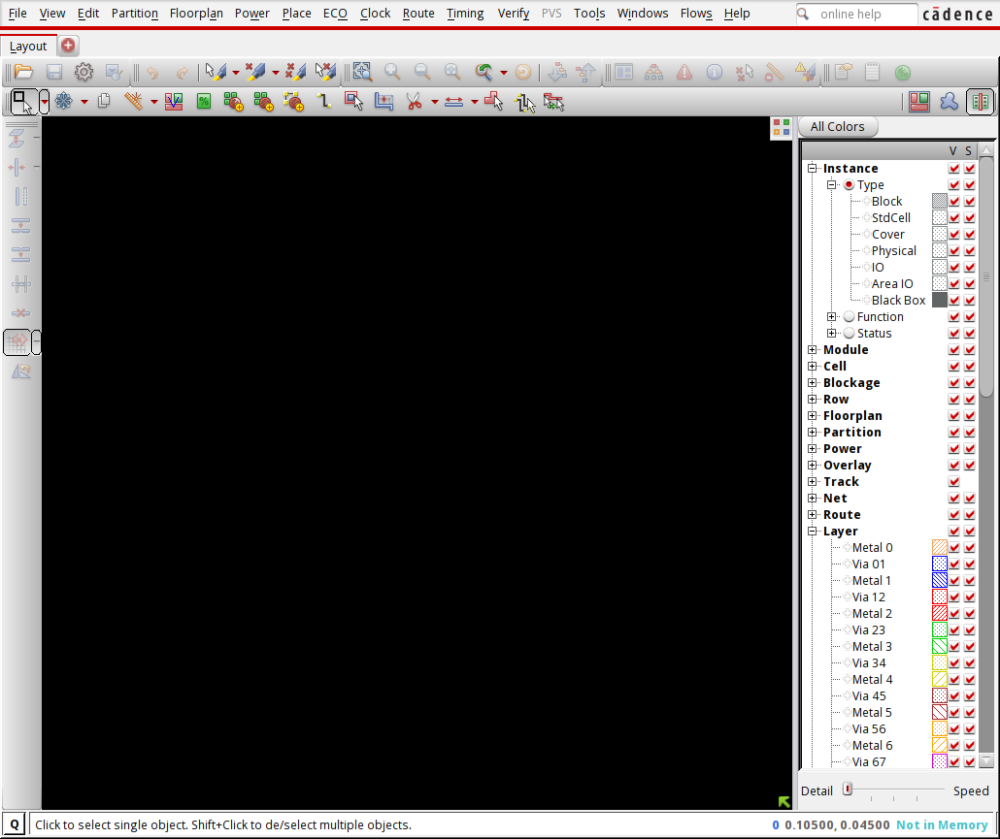
6.2. Initialize the design
Now we can read the design. In the menu execute File → Import Design
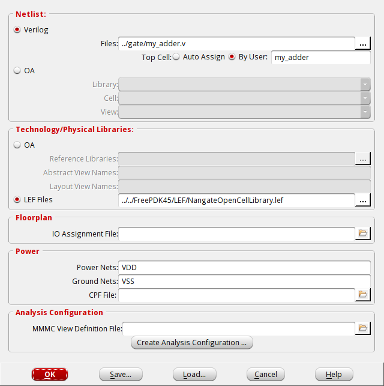
You have to select the verilog file to read (and the name of the top cell), the LEF files with the information about the standard cells, and the power nets of your design, i.e. VDD and VSS. Click OK to proceed.
Alternatively you can execute the following tcl commands:
set init_lef_file ../../../0_FreePDK45/LEF/NangateOpenCellLibrary.lef set init_gnd_net VSS set init_pwr_net VDD set init_verilog ../gate/my_adder.v set init_top_cell my_adder init_design
6.3. Floorplan
The next step is to define the floorplan of your unit. In the menu select Floorplan → Specify floorplan. For example, you can select that the design should have an aspect ration of 1, a core utilization of 70% and a core to io boundary distance of 3 μ m in all the directions.
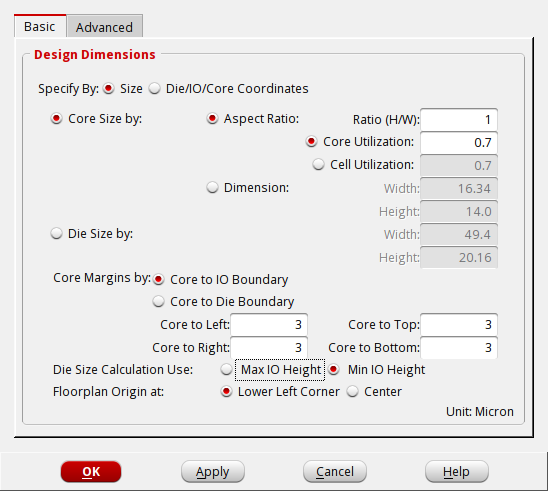
Alternatively you can execute in the tcl terminal:
floorPlan -r 1 0.7 3.0 3.0 3.0 3.0
#+ Location of pins can be set with Edit → Pin editor.
6.4. Place the cells and pins
Now we can place the cells. In the menu slect Place → Place standard cells
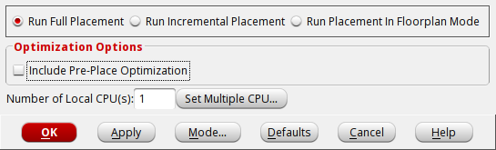
deselect the Include Pre-Place Optimization and click in Mode... to select additional options. In the new window you should select Place IO Pins.
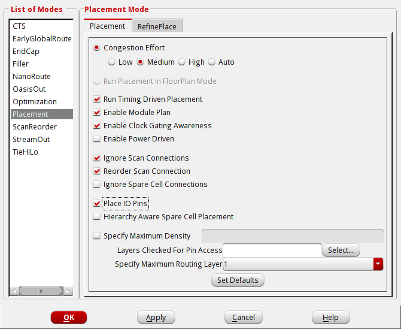
setPlaceMode -placeIOPins 1 placeDesign -noPrePlaceOpt
Since in this simple tutorial we are not using timing constraints, we are not going to generate an optimized clock tree.
Now you should insert filler cells to fill the holes in the rows. In the menu select Place → Physical cells → Filler cells. Click in Select and select all the filler cells, then click ok.
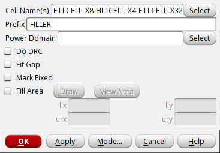
Alternatively, you can execute the following tcl command.
addFiller -cell FILLCELL_X8 FILLCELL_X4 FILLCELL_X2 FILLCELL_X1 -prefix FILLER
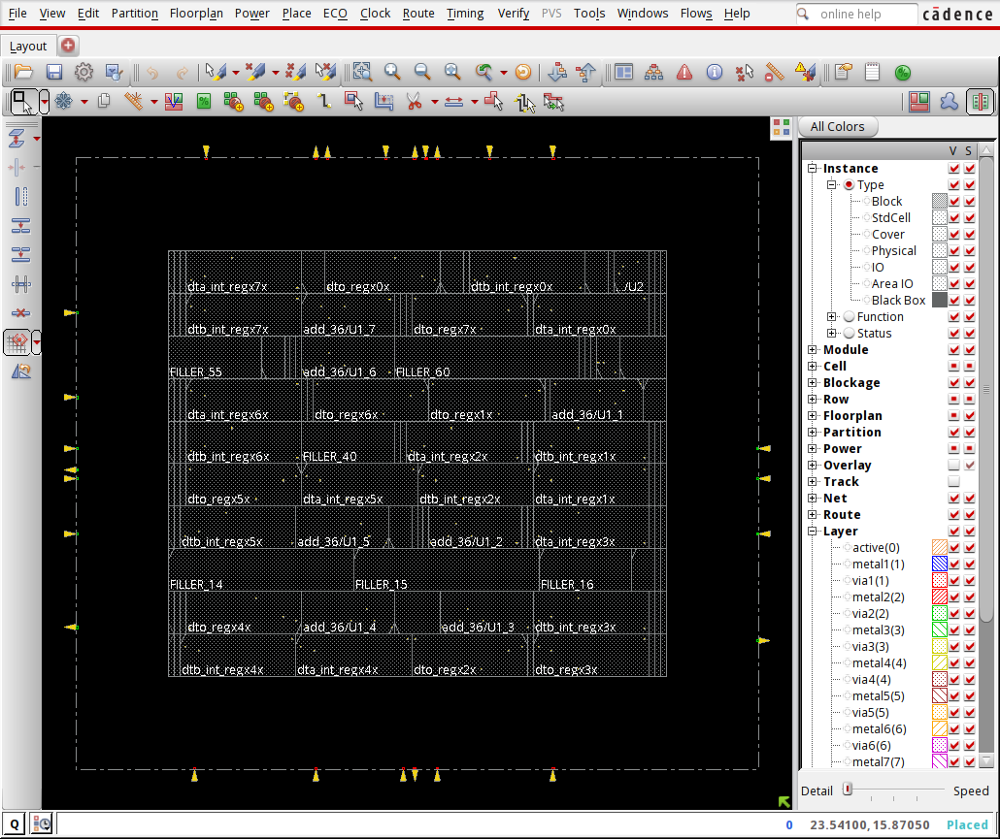
6.5. Route the design
After the placement, we can route the nets. In the menu select Route → Nano route → Route.
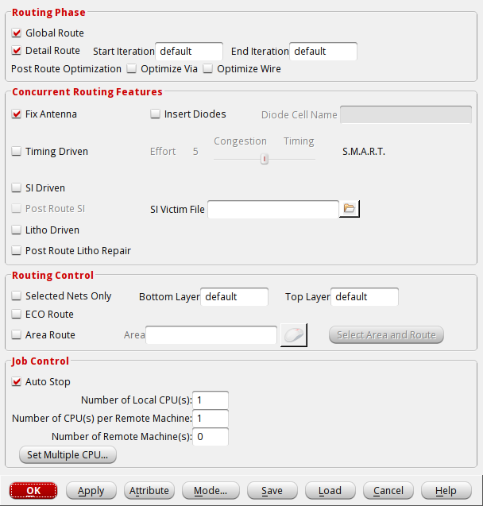
Alternatively, you can execute the following tcl command.
routeDesign -globalDetail
#dumpToGIF can be used to plot an image automatically
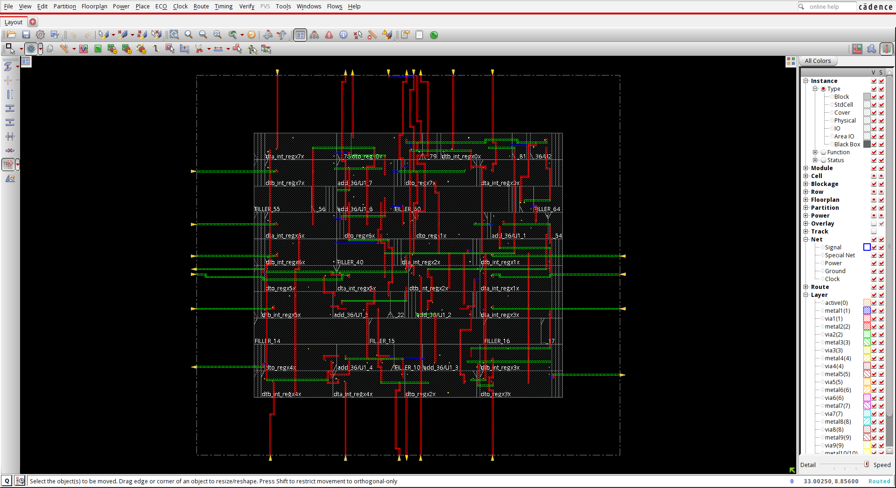
6.6. Verify and write result
You can check that your design does not have errors. In the tcl terminal type:
verify_drc -report reports/my_adder.drc verify_connectivity -report reports/my_adder.connect
Now you can export your design into a gds file. File → Save → GDS/Oasis.
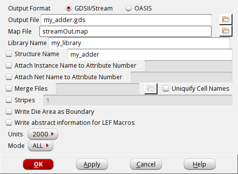
Alternatively, you can execute the following tcl command.
streamOut results/my_adder.gds -mapFile streamOut.map -libName my_library -units 2000 -mode ALL
6.7. Automatic execution
Your first place and route is done. If you want to repeat the steps, it is a
good idea to create a script with all the commands. You can create a file called
cmd/do_pr_spl.tcl with the following content:
set init_lef_file ../../../0_FreePDK45/LEF/NangateOpenCellLibrary.lef set init_gnd_net VSS set init_pwr_net VDD set init_verilog ../gate/my_adder.v set init_top_cell my_adder init_design floorPlan -r 1 0.7 3.0 3.0 3.0 3.0 setPlaceMode -placeIOPins 1 placeDesign -noPrePlaceOpt addFiller -cell FILLCELL_X8 FILLCELL_X4 FILLCELL_X2 FILLCELL_X1 -prefix FILLER routeDesign -globalDetail verify_drc -report reports/my_adder.drc verify_connectivity -report reports/my_adder.connect streamOut results/my_adder.gds -mapFile streamOut.map -libName my_library -units 2000 -mode ALL
and then re-execute the process as follows:
innovus -log log/ -file cmd/do_pr_spl.tcl -batch
Once you are satisfied with the results of your place and route, you can copy the files to the
directory layout . From this directory you can run the physical verification.
cp results/my_adder.gds ../layout